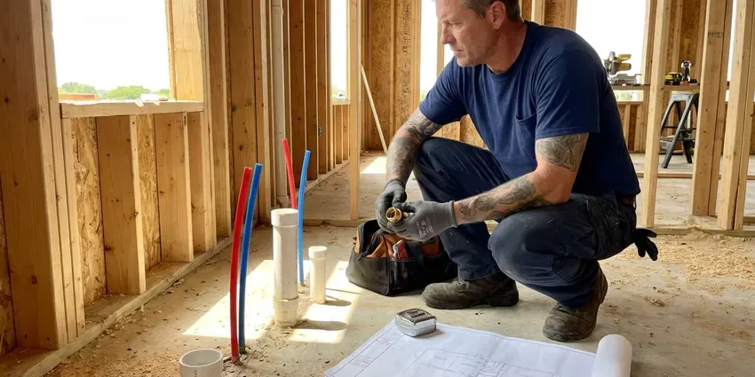

Emergency Plumber in Rapid Valley, SD
A burst line can soak a room in ten minutes. HWR Plumbing gets a plumber to Rapid Valley, SD homes quickly and prices the fix before starting.
- No Surprise Overtime
- Licensed South Dakota Plumbers
- Live 24/7 Dispatch
- Nights, Weekends, Holidays

Get a Plumber Out Tonight in Rapid Valley, SD
Gas smell? Get outside and call the gas utility, then call us at (605) 480-9736.
Local Emergency Plumbing for Rapid Valley, SD
HWR Plumbing sends licensed plumbers, not helpers, on night calls in Rapid Valley, SD. A good emergency visit is mostly diagnosis. Our tech checks the meter, isolates the failed branch and looks at the valve or fitting that let go, because a patch over the wrong problem just brings you a second call.
Work we handle every week:
- Replacing seized multi-turn stops
- Burst pipe repair and replacement
- Overflowing toilets and seized stops

Additional Plumbing Maintenance Services in Rapid Valley, SD
Our maintenance and specialty plumbing services in Rapid Valley, SD catch small problems before they become emergencies.


Customers
Why Choose HWR Plumbing for Emergency Plumber in Rapid Valley, SD?
A slow leak behind a wall can soak the insulation and bottom plate for hours, sometimes days, before anyone sees a stain. We answer live at any hour, and the dispatcher stays on the line while you find the main. Those first minutes decide how much drywall goes.
- Price Up Front, The dispatch fee is quoted on the call and see the repair price before work begins.
- Phone Shutoff Help, We talk you through the shutoff before the plumber arrives.
- Lasting Repairs, We cut out the bad section rather than clamp it, so the fix holds after the emergency is over.
Citywide Coverage
Downtown condos and rural homes on wells both get emergency service from us around Rapid Valley. Wells come with their own issues. Our trucks carry pressure switches and tank fittings in addition to the standard city water parts.
Experienced Team
Every plumber on call knows how to locate a collapsed sewer or a slab leak on the first visit to the house. Many came up through new construction. That background helps when reading old pipe layouts.
Safety-First Approach
On water heater calls we check the relief valve, the vent draft and the gas connection, not just the part that failed. A blocked vent is dangerous. We test for spillage before leaving a gas unit running.
Trusted Certified Rapid Valley Plumbing Services Professionals
At HWR Plumbing, we are proud to offer certified plumbing services throughout Rapid Valley, SD. Credentials matter in this trade. Every repair, install and maintenance visit follows strict safety and quality rules, and the plumbers doing the work carry recognized industry credentials.
Call Us Now PHCC Plumbing Contractor Recognition
PHCC Plumbing Contractor Recognition Better Business Bureau (BBB) Accreditation
Better Business Bureau (BBB) Accreditation Angi Certified Pro
Angi Certified Pro ISO 9001 Quality Management Certification
ISO 9001 Quality Management CertificationWhat We Fix After Hours in Rapid Valley, SD
Main Line Emergencies in Rapid Valley
Gurgling toilets and a slow tub together usually mean the main is closing up. Roots, grease and broken clay or cast iron are the usual suspects. We clear the line from the cleanout with a cable machine or jetter, then camera it, and if the pipe is broken you get repair options before we pack up. You get answers that day.

Emergency Water Heater Repair in Rapid Valley
At night, lost hot water is usually a control failure rather than a dead tank. On gas units, we check the thermocouple or flame sensor, the gas valve and the venting. Electric tanks get their elements and thermostats tested with a meter. We check tankless units for scale. We carry common parts for Rheem, AO Smith, Bradford White and Rinnai, which lets us finish most of these the same night.
Slab Leak Detection and Repair in Rapid Valley, SD
A warm patch on a tile floor or a meter that turns with every fixture off usually points to a line under the slab. Shifting clay and deep frost can strain buried sewer and water lines, so a camera inspection is useful when drains back up repeatedly. We close the hot or cold side to stop the loss, then pinpoint the spot with an acoustic listener and a thermal camera, which keeps the concrete cut to a single small opening. Repair can be a spot fix through the slab or a reroute overhead. You choose once you see both quotes.
Cost of Emergency Plumbing in Rapid Valley, SD
A cleared toilet clog runs far less than a burst pipe inside a finished wall. Price depends on the part that failed, how hard it is to reach and whether drywall has to come off, which matters more than what time you call. We quote before working. Most small emergency fixes in Rapid Valley fall in the low hundreds of dollars, with larger repairs priced on site.
Emergency Slab Leak Response in Rapid Valley, SD
Hearing water with every fixture off is a classic slab leak sign. So is a hot spot on the floor. We isolate the hot or cold side first, which keeps some water running for the night, then locate the leak with acoustic and thermal gear. Repairs include a direct cut through the slab, a reroute through the walls or attic, or a partial repipe of that branch.
Overflowing Toilets and Runaway Fixtures in Rapid Valley
A faucet that will not shut off can flood a vanity cabinet in minutes. Older multi-turn stops often seize, so the homeowner cannot close them. We replace the cartridge, fill valve or flapper that failed, and swap the stuck valve for a new quarter-turn stop under the sink. That way you can shut it off yourself next time.
Emergency Plumbing for Rentals and Businesses in Rapid Valley
A burst line in a second-floor apartment soaks the unit underneath quickly. We respond after hours and on weekends to rentals, offices and restaurants, including multi-unit supply risers, grease lines and commercial water heaters. Property managers can open an account. Dispatch then has your unit notes, shutoff locations and approval limits on file.

Gas Odor Calls in Rapid Valley, SD
Gas smell inside means get out first. Call 911 or the gas utility once you are a safe distance away, and do not start a car in an attached garage. After the scene is cleared, our licensed plumbers locate the leak, replace the bad pipe and pressure test the whole run. Appliance connectors get checked too.
Emergency Plumbing Near You in Rapid Valley, SD
Searching for an emergency plumber near me in Rapid Valley at night usually turns up call centers that sell your lead. HWR Plumbing dispatches our own plumbers. The person you talk to works for the company doing the job.
An emergency plumber close to home also knows the pipe you probably have. In Rapid Valley, that might be galvanized in older blocks, copper in mid-century homes or PEX in new subdivisions, and each one fails in its own way. That shortens the diagnosis.
HWR Plumbing at a Glance
- Fully licensed plumbing team covering Rapid Valley, SD
- 24/7 emergency service with same-day scheduling
- Clear written estimates, no hidden fees
- 4.8-star rated by 304+ South Dakota customers
Rapid Valley Map
Rapid Valley Information
- Population
- 8,098
- Area codes
- Local
- Service area
- Rapid Valley and towns within a 40 mile drive
- Nearby
- Box Elder, Rapid City, Sturgis, Spearfish
Minerals in the supply wear out valves, flex connectors and tank bottoms, so pinhole leaks and failed water heaters are a big share of our night calls in Rapid Valley, SD. Mineral scale builds up quickly in water heaters, faucet aerators and fixtures here, so a softening system is a common upgrade for homeowners.
Expert Services
Call HWR Plumbing for honest, reliable plumbing from people who know the trade in Rapid Valley, SD.
Our Specialized Plumbing Services in Rapid Valley, SD
At HWR Plumbing, we handle the full list of plumbing services across Rapid Valley, SD. We go from leak detection all the way to full system installations, for homes and commercial buildings, and we do it quickly at a fair price. Explore our core services below:


What Happens When You Call Us in Rapid Valley, SD
Here is what happens after you call HWR Plumbing in Rapid Valley, SD, from first ring to the last pressure check.
Talk to Dispatch
Call (605) 480-9736 at any hour. Describe what you see, and the dispatcher will help you stop the water.
Quick Arrival
The closest available plumber drives out to your Rapid Valley address and calls when close.
Fix It Right
You approve a written price, then we repair it with parts from the truck.
Frequently Asked Questions About Emergency Plumber in Rapid Valley
That depends on the failed part. A toilet clog or a leaking supply connector is a small job, while a burst pipe inside a finished wall or a main line backup can run $500 to $1,500 or more when walls have to open. You get the price before work starts.
We do. HWR Plumbing clears commercial grease lines, repairs burst branches and gets commercial water heaters running again across Rapid Valley, often overnight so the doors open on time.
A pipe patch or clog clearing usually does not. Water heater replacements, sewer line replacements and gas line work usually require one from your building department. We handle the permit.
They do. HWR Plumbing puts a parts and labor warranty on every emergency repair, written right on the invoice you sign at the end of the visit. We return if the repair does not hold.
We do. HWR Plumbing runs emergency calls for restaurants, offices and apartment buildings in Rapid Valley, SD. Bigger systems need bigger equipment, and our trucks carry jetters and commercial water heater parts so downtime stays short and you can reopen the same day.
It can. Scale builds up in pipes and tanks, which chokes flow and burns out heating elements, and over years it can speed up corrosion in copper. That often leads to pinhole leaks.
Anything that is damaging the house right now or makes the plumbing unusable. Burst pipes and sewage backups count. So does a toilet that will not stop overflowing after a flush, a gas smell, or a total loss of water.
A meter that moves with everything off, warm spots on the floor and rust under the water heater all show up before the big failure. Gurgling drains do too. High water pressure, above 80 PSI, is another warning.
What People Are Saying About Our Plumbing Experts?

Jessica T.
We were adding a gas range in a kitchen remodel and needed a new line run from the meter. The plumber pulled the permit, ran the pipe through the crawl space, and had it inspected and approved within the week.
Gas Line Repair · Pierre, SD
Nathan E.
Our tankless heater kept throwing an error code and shutting off mid shower. The tech flushed the heat exchanger, which was full of scale, and replaced a bad flow sensor. Hot water has been steady for half a year now.
Water Heater Repair · Rapid City, SD
James P.
Our restaurant had a slow leak at the hand sink that was rotting the cabinet base. HWR Plumbing came in at six in the morning before prep, replaced the trap and both supply lines, and was packed up before my first cook clocked in.
Commercial Plumbing · Spearfish, SD
Rachel N.
Hard water was leaving white crust on every faucet and our dishwasher was struggling. The tech tested the water, recommended a softener sized for a family of five, and installed it with a bypass valve in one afternoon. The spots on our glasses are gone.
Water Softener · Rapid Valley, SDLaura S.
Our 40 gallon tank started leaking from the bottom after thirteen years. The tech hauled the old one out, set a new unit with a fresh expansion tank, and had hot water running in about four hours. He took the old tank with him too.
Water Heater Replacement · Sturgis, SDLisa C.
Water was pouring out from under the washing machine on a holiday weekend. HWR Plumbing talked me through closing the valves over the phone and had a plumber at the house within ninety minutes. It was a burst fill hose.
Emergency Plumbing · Belle Fourche, SD